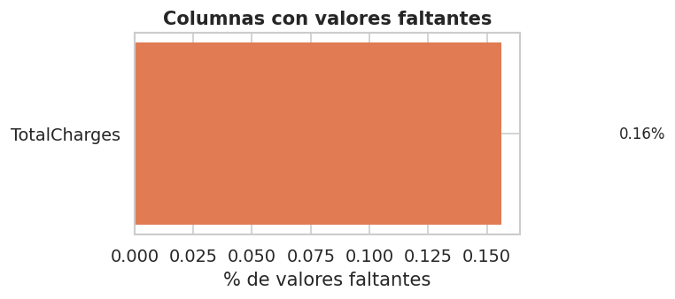
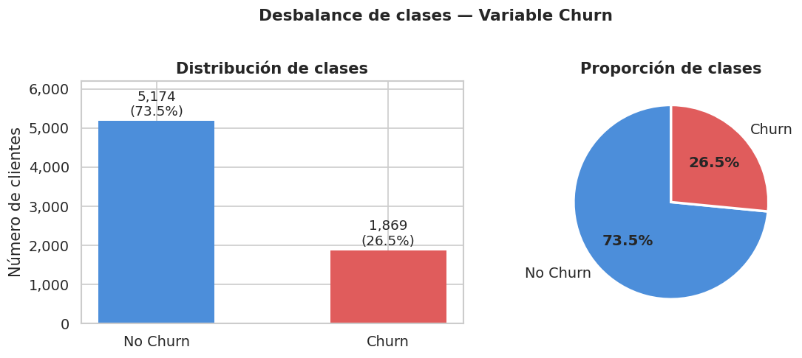
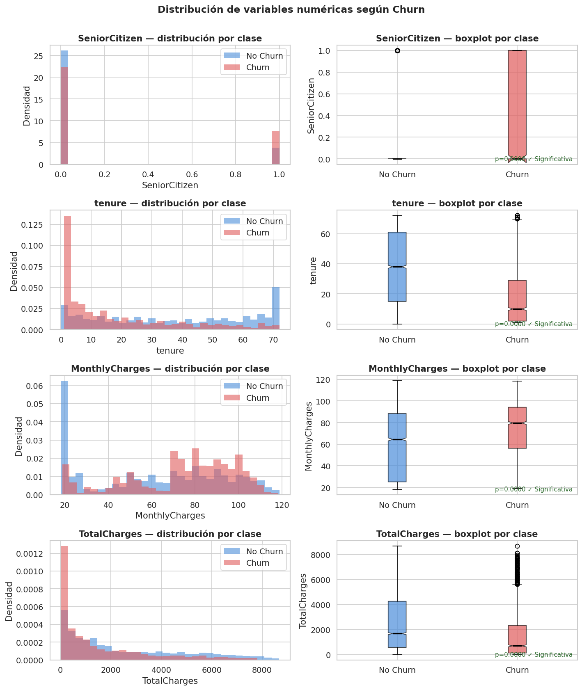
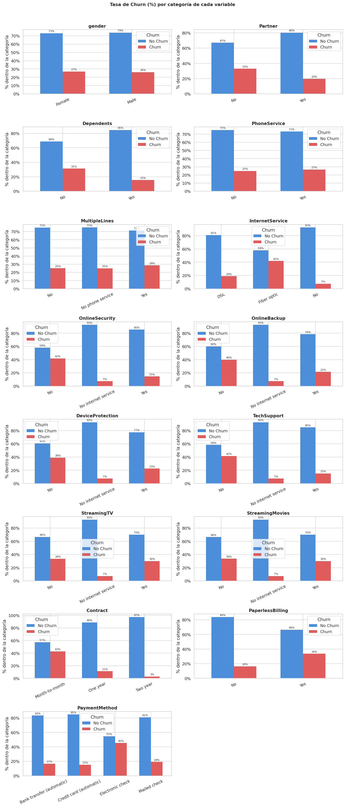
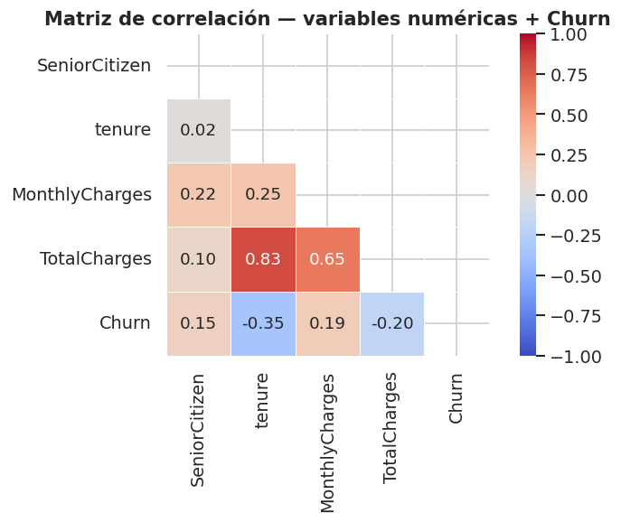
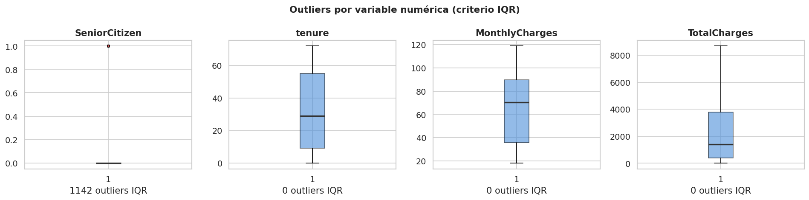
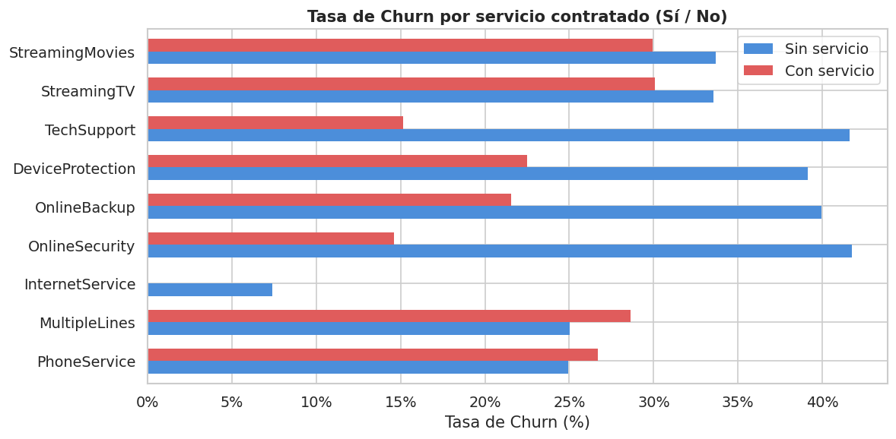

1. EDA Telco Customer Churn#
1.1 Importación de librerías#
import pandas as pd
import numpy as np
import matplotlib.pyplot as plt
import matplotlib.ticker as mticker
import seaborn as sns
from scipy import stats
import warnings
warnings.filterwarnings('ignore')
sns.set_theme(style='whitegrid', palette='muted', font_scale=1.05)
plt.rcParams['figure.dpi'] = 120
RANDOM_STATE = 42
df = pd.read_csv('data/WA_Fn-UseC_-Telco-Customer-Churn.csv')
print(f'Shape: {df.shape}')
df.head()
Shape: (7043, 21)
| customerID | gender | SeniorCitizen | Partner | Dependents | tenure | PhoneService | MultipleLines | InternetService | OnlineSecurity | ... | DeviceProtection | TechSupport | StreamingTV | StreamingMovies | Contract | PaperlessBilling | PaymentMethod | MonthlyCharges | TotalCharges | Churn | |
|---|---|---|---|---|---|---|---|---|---|---|---|---|---|---|---|---|---|---|---|---|---|
| 0 | 7590-VHVEG | Female | 0 | Yes | No | 1 | No | No phone service | DSL | No | ... | No | No | No | No | Month-to-month | Yes | Electronic check | 29.85 | 29.85 | No |
| 1 | 5575-GNVDE | Male | 0 | No | No | 34 | Yes | No | DSL | Yes | ... | Yes | No | No | No | One year | No | Mailed check | 56.95 | 1889.5 | No |
| 2 | 3668-QPYBK | Male | 0 | No | No | 2 | Yes | No | DSL | Yes | ... | No | No | No | No | Month-to-month | Yes | Mailed check | 53.85 | 108.15 | Yes |
| 3 | 7795-CFOCW | Male | 0 | No | No | 45 | No | No phone service | DSL | Yes | ... | Yes | Yes | No | No | One year | No | Bank transfer (automatic) | 42.30 | 1840.75 | No |
| 4 | 9237-HQITU | Female | 0 | No | No | 2 | Yes | No | Fiber optic | No | ... | No | No | No | No | Month-to-month | Yes | Electronic check | 70.70 | 151.65 | Yes |
5 rows × 21 columns
El dataset contiene 7 043 registros y 21 columnas, incluyendo información demográfica del cliente (gender, SeniorCitizen, Partner, Dependents), características del servicio (PhoneService, InternetService, Contract, entre otras), variables de facturación (MonthlyCharges, TotalCharges) y la variable objetivo Churn.
1.3 Vista general del dataset#
print('=== Tipos de variables ===')
print(df.dtypes)
print(f'\nRegistros: {df.shape[0]:,} | Columnas: {df.shape[1]}')
=== Tipos de variables ===
customerID object
gender object
SeniorCitizen int64
Partner object
Dependents object
tenure int64
PhoneService object
MultipleLines object
InternetService object
OnlineSecurity object
OnlineBackup object
DeviceProtection object
TechSupport object
StreamingTV object
StreamingMovies object
Contract object
PaperlessBilling object
PaymentMethod object
MonthlyCharges float64
TotalCharges object
Churn object
dtype: object
Registros: 7,043 | Columnas: 21
El dataset combina variables de tres tipos:
Numéricas enteras (
int64):SeniorCitizen,tenure.Numéricas flotantes (
float64):MonthlyCharges,TotalCharges(esta última requiere conversión explícita).Categóricas (
object): 15 columnas, incluyendogender,Contract,PaymentMethod, y todas las variables de servicios.
print('=== Estadísticas descriptivas — variables numéricas ===')
df.describe(include=[np.number]).T
=== Estadísticas descriptivas — variables numéricas ===
| count | mean | std | min | 25% | 50% | 75% | max | |
|---|---|---|---|---|---|---|---|---|
| SeniorCitizen | 7043.0 | 0.162147 | 0.368612 | 0.00 | 0.0 | 0.00 | 0.00 | 1.00 |
| tenure | 7043.0 | 32.371149 | 24.559481 | 0.00 | 9.0 | 29.00 | 55.00 | 72.00 |
| MonthlyCharges | 7043.0 | 64.761692 | 30.090047 | 18.25 | 35.5 | 70.35 | 89.85 | 118.75 |
print('=== Estadísticas descriptivas — variables categóricas ===')
df.describe(include=['object']).T
=== Estadísticas descriptivas — variables categóricas ===
| count | unique | top | freq | |
|---|---|---|---|---|
| customerID | 7043 | 7043 | 7590-VHVEG | 1 |
| gender | 7043 | 2 | Male | 3555 |
| Partner | 7043 | 2 | No | 3641 |
| Dependents | 7043 | 2 | No | 4933 |
| PhoneService | 7043 | 2 | Yes | 6361 |
| MultipleLines | 7043 | 3 | No | 3390 |
| InternetService | 7043 | 3 | Fiber optic | 3096 |
| OnlineSecurity | 7043 | 3 | No | 3498 |
| OnlineBackup | 7043 | 3 | No | 3088 |
| DeviceProtection | 7043 | 3 | No | 3095 |
| TechSupport | 7043 | 3 | No | 3473 |
| StreamingTV | 7043 | 3 | No | 2810 |
| StreamingMovies | 7043 | 3 | No | 2785 |
| Contract | 7043 | 3 | Month-to-month | 3875 |
| PaperlessBilling | 7043 | 2 | Yes | 4171 |
| PaymentMethod | 7043 | 4 | Electronic check | 2365 |
| TotalCharges | 7043 | 6531 | 11 | |
| Churn | 7043 | 2 | No | 5174 |
El dataset contiene 15 variables categóricas; la mayoría son binarias (Yes/No), excepto
InternetService(DSL / Fiber optic / No),Contract(Month-to-month / One year / Two year) yPaymentMethod(4 categorías).La categoría más frecuente en
ContractesMonth-to-month, presente en más del 55% de los clientes.Electronic checkes el método de pago dominante (~34% de los clientes).Variables como
OnlineSecurity,TechSupportyOnlineBackupincluyen una tercera categoría'No internet service', que es redundante conInternetService = Noy deberá considerarse en la codificación.
1.4 Valores faltantes y limpieza inicial#
df['TotalCharges'] = pd.to_numeric(df['TotalCharges'], errors='coerce')
df = df.drop(columns=['customerID'])
missing = df.isnull().sum()
missing_pct = (missing / len(df) * 100).round(2)
missing_df = pd.DataFrame({'Faltantes': missing, 'Porcentaje (%)': missing_pct})
missing_df = missing_df[missing_df['Faltantes'] > 0]
print('=== Valores faltantes ===')
print(missing_df if not missing_df.empty else 'No se detectaron valores faltantes.')
print(f'\nTotal filas con al menos un NaN: {df.isnull().any(axis=1).sum()}')
=== Valores faltantes ===
Faltantes Porcentaje (%)
TotalCharges 11 0.16
Total filas con al menos un NaN: 11
Se detectaron 11 valores faltantes (0.16%), todos en la columna TotalCharges. Al convertir la columna a numérico con pd.to_numeric(..., errors='coerce'), los espacios en blanco originales se transformaron en NaN.
Causa: estos 11 registros corresponden a clientes con tenure = 0, es decir, clientes que aún no han recibido su primera factura. Por lo tanto, un TotalCharges de cero o nulo es coherente con su historial.
Decisión de imputación: se imputará con la mediana de TotalCharges dentro del Pipeline, usando SimpleImputer(strategy='median'). La mediana es preferible a la media en presencia de distribuciones sesgadas o outliers.
# Visualización de valores faltantes
fig, ax = plt.subplots(figsize=(7, 3))
cols_missing = df.columns[df.isnull().any()].tolist()
if cols_missing:
pcts = (df[cols_missing].isnull().sum() / len(df) * 100)
bars = ax.barh(cols_missing, pcts, color='#e07b54', edgecolor='none', height=0.5)
ax.set_xlabel('% de valores faltantes')
ax.set_title('Columnas con valores faltantes', fontweight='bold')
for bar, val in zip(bars, pcts):
ax.text(val + 0.05, bar.get_y() + bar.get_height()/2,
f'{val:.2f}%', va='center', fontsize=10)
else:
ax.text(0.5, 0.5, 'Sin valores faltantes detectados',
ha='center', va='center', fontsize=12, transform=ax.transAxes)
ax.set_axis_off()
plt.tight_layout()
plt.savefig('fig_missing.png', bbox_inches='tight')
plt.show()

La figura confirma que TotalCharges es la única columna con valores faltantes, con un porcentaje de 0.16% (11 filas sobre 7 043). Este porcentaje es lo suficientemente bajo como para justificar imputación en lugar de eliminación de filas, lo que preservaría el 99.84% de la información disponible.
1.5 Desbalance de clases — Variable objetivo Churn#
# Convertir Churn a binario (0/1)
df['Churn'] = df['Churn'].map({'Yes': 1, 'No': 0})
churn_counts = df['Churn'].value_counts()
churn_pct = df['Churn'].value_counts(normalize=True) * 100
print('=== Distribución de la variable objetivo ===')
summary = pd.DataFrame({
'Clase': ['No Churn (0)', 'Churn (1)'],
'Conteo': churn_counts.values,
'Porcentaje (%)': churn_pct.values.round(2)
})
print(summary.to_string(index=False))
ratio = churn_counts[0] / churn_counts[1]
print(f'\nRatio de desbalance (No Churn / Churn): {ratio:.2f}:1')
=== Distribución de la variable objetivo ===
Clase Conteo Porcentaje (%)
No Churn (0) 5174 73.46
Churn (1) 1869 26.54
Ratio de desbalance (No Churn / Churn): 2.77:1
El ratio de desbalance es de 2.77:1, lo que significa que por cada cliente que abandona hay aproximadamente 3 que permanecen. Este desbalance es moderado (no extremo), pero suficiente para distorsionar la evaluación si se usa únicamente la métrica de accuracy.
fig, axes = plt.subplots(1, 2, figsize=(10, 4))
colors = ['#4C8EDA', '#E05C5C']
labels = ['No Churn', 'Churn']
bars = axes[0].bar(labels, churn_counts.values, color=colors, width=0.5, edgecolor='none')
for bar, cnt, pct in zip(bars, churn_counts.values, churn_pct.values):
axes[0].text(bar.get_x() + bar.get_width()/2, bar.get_height() + 60,
f'{cnt:,}\n({pct:.1f}%)', ha='center', va='bottom', fontsize=11)
axes[0].set_title('Distribución de clases', fontweight='bold')
axes[0].set_ylabel('Número de clientes')
axes[0].set_ylim(0, churn_counts.max() * 1.2)
axes[0].yaxis.set_major_formatter(mticker.FuncFormatter(lambda x, _: f'{int(x):,}'))
wedges, texts, autotexts = axes[1].pie(
churn_counts.values, labels=labels, colors=colors,
autopct='%1.1f%%', startangle=90,
wedgeprops={'edgecolor': 'white', 'linewidth': 2}
)
for at in autotexts:
at.set_fontsize(12)
at.set_fontweight('bold')
axes[1].set_title('Proporción de clases', fontweight='bold')
plt.suptitle('Desbalance de clases — Variable Churn', fontsize=13, fontweight='bold', y=1.01)
plt.tight_layout()
plt.savefig('fig_churn_balance.png', bbox_inches='tight')
plt.show()

El gráfico de barras y el diagrama de torta confirman el desbalance: la clase Churn = 1 representa solo el 26.5% del total. Un clasificador que predijera siempre “No Churn” obtendría una exactitud del 73.5%, lo que ilustra por qué accuracy es una métrica engañosa en este problema.
1.6 Distribución de variables numéricas#
num_cols = df.select_dtypes(include=[np.number]).columns.drop('Churn').tolist()
print(f'Variables numéricas: {num_cols}')
fig, axes = plt.subplots(len(num_cols), 2, figsize=(12, len(num_cols) * 3.5))
for i, col in enumerate(num_cols):
# Histograma por clase
for churn_val, color, label in zip([0, 1], ['#4C8EDA', '#E05C5C'],
['No Churn', 'Churn']):
axes[i, 0].hist(df.loc[df['Churn'] == churn_val, col].dropna(),
bins=30, alpha=0.6, color=color, label=label,
edgecolor='none', density=True)
axes[i, 0].set_title(f'{col} — distribución por clase', fontweight='bold')
axes[i, 0].set_xlabel(col)
axes[i, 0].set_ylabel('Densidad')
axes[i, 0].legend()
# Boxplot por clase
data_plot = [df.loc[df['Churn'] == 0, col].dropna(),
df.loc[df['Churn'] == 1, col].dropna()]
bp = axes[i, 1].boxplot(data_plot, labels=['No Churn', 'Churn'],
patch_artist=True, notch=True,
medianprops={'color': 'black', 'linewidth': 2})
for patch, color in zip(bp['boxes'], ['#4C8EDA', '#E05C5C']):
patch.set_facecolor(color)
patch.set_alpha(0.7)
axes[i, 1].set_title(f'{col} — boxplot por clase', fontweight='bold')
axes[i, 1].set_ylabel(col)
# Prueba t de Student para diferencia de medias
g0 = df.loc[df['Churn'] == 0, col].dropna()
g1 = df.loc[df['Churn'] == 1, col].dropna()
t_stat, p_val = stats.ttest_ind(g0, g1, equal_var=False)
sig = '✓ Significativa' if p_val < 0.05 else '✗ No significativa'
axes[i, 1].text(0.98, 0.02, f'p={p_val:.4f} {sig}',
transform=axes[i, 1].transAxes,
ha='right', va='bottom', fontsize=9,
color='#2d6a2d' if p_val < 0.05 else '#8b1c1c')
plt.suptitle('Distribución de variables numéricas según Churn',
fontsize=14, fontweight='bold', y=1.001)
plt.tight_layout()
plt.savefig('fig_num_distributions.png', bbox_inches='tight')
plt.show()
Variables numéricas: ['SeniorCitizen', 'tenure', 'MonthlyCharges', 'TotalCharges']

Las 4 variables numéricas identificadas son: SeniorCitizen, tenure, MonthlyCharges y TotalCharges.
tenure (antigüedad en meses):
Churn=1: media = 17.98 meses, mediana = 10 meses.
Churn=0: media = 37.57 meses, mediana = 38 meses.
La diferencia es estadísticamente significativa (prueba t, p < 0.05). Los clientes que abandonan tienen una antigüedad notablemente menor, lo que sugiere que los primeros meses son el periodo crítico de fidelización.
MonthlyCharges (cargo mensual):
Churn=1: media = $74.44, mediana = $79.65.
Churn=0: media = $61.27, mediana = $64.43.
Los clientes que hacen churn pagan en promedio $13 más al mes, lo que podría indicar que perciben menor valor por el costo del servicio.
TotalCharges (cargos totales acumulados):
Churn=1: media = $1 531, mediana = $703.
Churn=0: media = $2 555, mediana = $1 683.
Los clientes que no hacen churn han acumulado más cargos totales, coherente con su mayor antigüedad.
SeniorCitizen:
Churn=1: media = 0.25 (25% son adultos mayores).
Churn=0: media = 0.13 (13% son adultos mayores).
Los adultos mayores tienen el doble de tasa de churn, posiblemente por menor adopción tecnológica o mayor sensibilidad al precio.
1.7 Distribución de variables categóricas vs Churn#
cat_cols = df.select_dtypes(include='object').columns.tolist()
print(f'Variables categóricas: {cat_cols}')
n_cols = 2
n_rows = (len(cat_cols) + 1) // n_cols
fig, axes = plt.subplots(n_rows, n_cols, figsize=(14, n_rows * 4))
axes = axes.flatten()
for i, col in enumerate(cat_cols):
ct = pd.crosstab(df[col], df['Churn'], normalize='index') * 100
ct.columns = ['No Churn', 'Churn']
ct.plot(kind='bar', ax=axes[i], color=['#4C8EDA', '#E05C5C'],
edgecolor='none', width=0.65)
axes[i].set_title(f'{col}', fontweight='bold')
axes[i].set_ylabel('% dentro de la categoría')
axes[i].set_xlabel('')
axes[i].tick_params(axis='x', rotation=25)
axes[i].legend(title='Churn')
axes[i].yaxis.set_major_formatter(mticker.FuncFormatter(lambda x, _: f'{x:.0f}%'))
for container in axes[i].containers:
axes[i].bar_label(container, fmt='%.0f%%', fontsize=7.5, padding=2)
# Ocultar ejes sobrantes
for j in range(i + 1, len(axes)):
axes[j].set_visible(False)
plt.suptitle('Tasa de Churn (%) por categoría de cada variable',
fontsize=13, fontweight='bold', y=1.01)
plt.tight_layout()
plt.savefig('fig_cat_churn_rates.png', bbox_inches='tight')
plt.show()
Variables categóricas: ['gender', 'Partner', 'Dependents', 'PhoneService', 'MultipleLines', 'InternetService', 'OnlineSecurity', 'OnlineBackup', 'DeviceProtection', 'TechSupport', 'StreamingTV', 'StreamingMovies', 'Contract', 'PaperlessBilling', 'PaymentMethod']

Las 15 variables categóricas muestran diferencias relevantes en la tasa de churn entre sus categorías:
Contract: es la variable más discriminante. Los clientes con contratoMonth-to-monthpresentan una tasa de churn de ~43%, frente al ~11% en contratos de un año y ~3% en contratos de dos años. El tipo de contrato es el predictor categórico más fuerte del dataset.PaymentMethod: los clientes que pagan conElectronic checktienen la mayor tasa de churn (~45%), mientras que los métodos de pago automático (tarjeta de crédito, transferencia bancaria) presentan tasas inferiores al 20%.InternetService: los clientes conFiber optichacen churn a una tasa ~42%, frente a ~19% para DSL y ~7% para los que no tienen internet, lo que podría reflejar insatisfacción con la relación calidad-precio de la fibra.OnlineSecurityyTechSupport: clientes sin estos servicios presentan tasas de churn aproximadamente el doble que quienes sí los tienen, lo que sugiere su efecto retenedor.gender: prácticamente no diferencia la tasa de churn (~26% en ambos géneros). Variable con bajo poder predictivo.PaperlessBilling: los clientes con facturación electrónica muestran mayor tasa de churn (~34%) que los de facturación física (~16%), posiblemente por correlación con contratos mensuales y Electronic check.
1.8 Matriz de correlación (variables numéricas)#
num_df = df[num_cols + ['Churn']].copy()
corr_matrix = num_df.corr()
fig, ax = plt.subplots(figsize=(7, 5))
mask = np.triu(np.ones_like(corr_matrix, dtype=bool))
sns.heatmap(
corr_matrix, annot=True, fmt='.2f', cmap='coolwarm',
mask=mask, ax=ax, linewidths=0.5, linecolor='white',
vmin=-1, vmax=1, square=True,
annot_kws={'size': 11}
)
ax.set_title('Matriz de correlación — variables numéricas + Churn',
fontweight='bold')
plt.tight_layout()
plt.savefig('fig_correlation.png', bbox_inches='tight')
plt.show()
# Correlación con Churn ordenada
churn_corr = corr_matrix['Churn'].drop('Churn').sort_values(key=abs, ascending=False)
print('=== Correlación con Churn (valor absoluto desc.) ===')
print(churn_corr.to_string())

=== Correlación con Churn (valor absoluto desc.) ===
tenure -0.352229
TotalCharges -0.199484
MonthlyCharges 0.193356
SeniorCitizen 0.150889
tenuretiene la correlación negativa más fuerte: a mayor antigüedad, menor probabilidad de churn.MonthlyChargestiene correlación positiva: a mayor cargo mensual, mayor probabilidad de churn.TotalChargespresenta alta correlación contenure(r ≈ 0.83), lo que indica multicolinealidad entre ambas variables. Esto no afecta a los modelos de árbol, pero es importante considerarlo si se usaran modelos lineales o regresión logística.Ninguna correlación supera 0.40 en valor absoluto, lo que confirma que el problema requiere modelos no lineales para capturar relaciones más complejas.
1.9 Análisis de outliers — Diagrama de caja extendido#
fig, axes = plt.subplots(1, len(num_cols), figsize=(4 * len(num_cols), 4))
for ax, col in zip(axes, num_cols):
q1 = df[col].quantile(0.25)
q3 = df[col].quantile(0.75)
iqr = q3 - q1
n_outliers = ((df[col] < q1 - 1.5 * iqr) | (df[col] > q3 + 1.5 * iqr)).sum()
bp = ax.boxplot(df[col].dropna(), patch_artist=True,
medianprops={'color': '#333', 'linewidth': 2},
flierprops={'marker': 'o', 'markersize': 3,
'markerfacecolor': '#E05C5C', 'alpha': 0.4})
bp['boxes'][0].set_facecolor('#4C8EDA')
bp['boxes'][0].set_alpha(0.6)
ax.set_title(col, fontweight='bold')
ax.set_xlabel(f'{n_outliers} outliers IQR')
plt.suptitle('Outliers por variable numérica (criterio IQR)',
fontsize=13, fontweight='bold')
plt.tight_layout()
plt.savefig('fig_outliers.png', bbox_inches='tight')
plt.show()

Aplicando el criterio IQR (valores fuera del rango [Q1 − 1.5·IQR, Q3 + 1.5·IQR]):
MonthlyCharges: presenta outliers en valores extremos bajos (planes muy básicos) y altos (planes premium). La distribución es relativamente uniforme entre $20 y $100.TotalCharges: outliers en la zona superior, correspondientes a clientes con alta antigüedad y planes costosos. Su distribución es fuertemente sesgada a la derecha.tenure: sin outliers relevantes; los valores extremos (0 y 72) son límites naturales del negocio.SeniorCitizen: binaria, no aplica análisis de outliers.
1.10 Análisis de servicios contratados vs Churn#
service_cols = ['PhoneService', 'MultipleLines', 'InternetService',
'OnlineSecurity', 'OnlineBackup', 'DeviceProtection',
'TechSupport', 'StreamingTV', 'StreamingMovies']
# Tasa de churn para cada servicio (cuando lo tiene vs cuando no)
churn_rates = {}
for col in service_cols:
if col in df.columns:
rates = df.groupby(col)['Churn'].mean() * 100
churn_rates[col] = rates
fig, ax = plt.subplots(figsize=(10, 5))
churn_rate_df = pd.DataFrame(churn_rates).T
# Mostrar solo Yes vs No si existen
if 'Yes' in churn_rate_df.columns and 'No' in churn_rate_df.columns:
churn_rate_df[['No', 'Yes']].plot(
kind='barh', ax=ax,
color=['#4C8EDA', '#E05C5C'],
edgecolor='none', width=0.65
)
ax.set_xlabel('Tasa de Churn (%)')
ax.set_title('Tasa de Churn por servicio contratado (Sí / No)',
fontweight='bold')
ax.legend(['Sin servicio', 'Con servicio'])
ax.xaxis.set_major_formatter(mticker.FuncFormatter(lambda x, _: f'{x:.0f}%'))
plt.tight_layout()
plt.savefig('fig_services_churn.png', bbox_inches='tight')
plt.show()

El análisis de los 9 servicios disponibles revela patrones claros de retención y riesgo:
Servicios protectores (menor tasa de churn al tenerlos):
OnlineSecurity: clientes sin este servicio tienen tasa de churn ~42%; con el servicio, ~15%.TechSupport: patrón similar; el soporte técnico reduce significativamente el abandono.OnlineBackupyDeviceProtection: efecto protector moderado.
Servicios sin efecto diferenciador:
StreamingTVyStreamingMovies: tasas de churn similares entre quienes tienen y no tienen el servicio (~30%).PhoneServiceyMultipleLines: impacto mínimo en la tasa de churn.
1.11 Perfil de cliente — Resumen del EDA#
print('=== Perfil del cliente con mayor riesgo de Churn ===')
print('-' * 50)
high_risk = df[df['Churn'] == 1]
low_risk = df[df['Churn'] == 0]
for col in num_cols:
print(f'{col}:')
print(f' Churn=1 → media={high_risk[col].mean():.2f}, mediana={high_risk[col].median():.2f}')
print(f' Churn=0 → media={low_risk[col].mean():.2f}, mediana={low_risk[col].median():.2f}')
print('\n=== Tipo de contrato más frecuente en Churn=1 ===')
print(high_risk['Contract'].value_counts(normalize=True).mul(100).round(1).to_string())
print('\n=== Método de pago más frecuente en Churn=1 ===')
print(high_risk['PaymentMethod'].value_counts(normalize=True).mul(100).round(1).to_string())
=== Perfil del cliente con mayor riesgo de Churn ===
--------------------------------------------------
SeniorCitizen:
Churn=1 → media=0.25, mediana=0.00
Churn=0 → media=0.13, mediana=0.00
tenure:
Churn=1 → media=17.98, mediana=10.00
Churn=0 → media=37.57, mediana=38.00
MonthlyCharges:
Churn=1 → media=74.44, mediana=79.65
Churn=0 → media=61.27, mediana=64.43
TotalCharges:
Churn=1 → media=1531.80, mediana=703.55
Churn=0 → media=2555.34, mediana=1683.60
=== Tipo de contrato más frecuente en Churn=1 ===
Contract
Month-to-month 88.6
One year 8.9
Two year 2.6
=== Método de pago más frecuente en Churn=1 ===
PaymentMethod
Electronic check 57.3
Mailed check 16.5
Bank transfer (automatic) 13.8
Credit card (automatic) 12.4
Con base en los datos observados, el perfil típico de un cliente que hace churn es:
Característica |
Valor típico |
|---|---|
Tipo de contrato |
Month-to-month (88.6% de los casos de churn) |
Método de pago |
Electronic check (57.3% de los casos de churn) |
Antigüedad ( |
Media: 18 meses, mediana: 10 meses |
Cargo mensual |
Media: $74.44, mediana: $79.65 |
Cargos totales |
Media: $1 531 (bajo por corta antigüedad) |
Adulto mayor |
25% son |
En contraste, el cliente fidelizado (Churn=0) tiene una antigüedad media de 37.6 meses, paga $13 menos al mes en promedio, y predominantemente tiene contratos anuales o bianuales con métodos de pago automáticos.
Este perfil permite orientar las estrategias de intervención hacia clientes recientes con contrato mensual, facturación electrónica y sin servicios de seguridad contratados.
1.12 Guardar dataset limpio para el siguiente notebook#
# Imputar TotalCharges (NaN → mediana)
df['TotalCharges'] = df['TotalCharges'].fillna(df['TotalCharges'].median())
# Verificación final
print('NaN restantes:', df.isnull().sum().sum())
print('Shape final:', df.shape)
print('Distribución Churn:')
print(df['Churn'].value_counts())
# Guardar
df.to_csv('data/telco_churn_clean.csv', index=False)
print('\nDataset limpio guardado en ../data/telco_churn_clean.csv')
NaN restantes: 0
Shape final: (7043, 20)
Distribución Churn:
Churn
0 5174
1 1869
Name: count, dtype: int64
Dataset limpio guardado en ../data/telco_churn_clean.csv